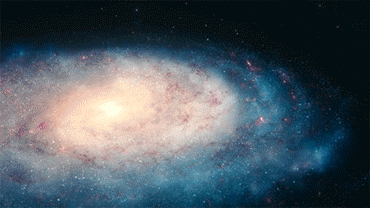

Milky Way Galaxy
The Milky Way is the galaxy that includes the Solar System, with the name describing the galaxy's appearance from Earth: a hazy band of light seen in the night sky formed from stars that cannot be individually distinguished by the naked eye. The term Milky Way is a translation of the Latin via lactea, from the Greek γαλακτικὸς κύκλος (galaktikòs kýklos), meaning "milky circle". From Earth, the Milky Way appears as a band because its disk-shaped structure is viewed from within.